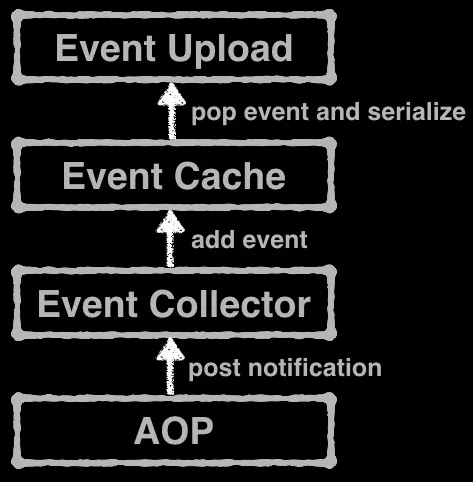
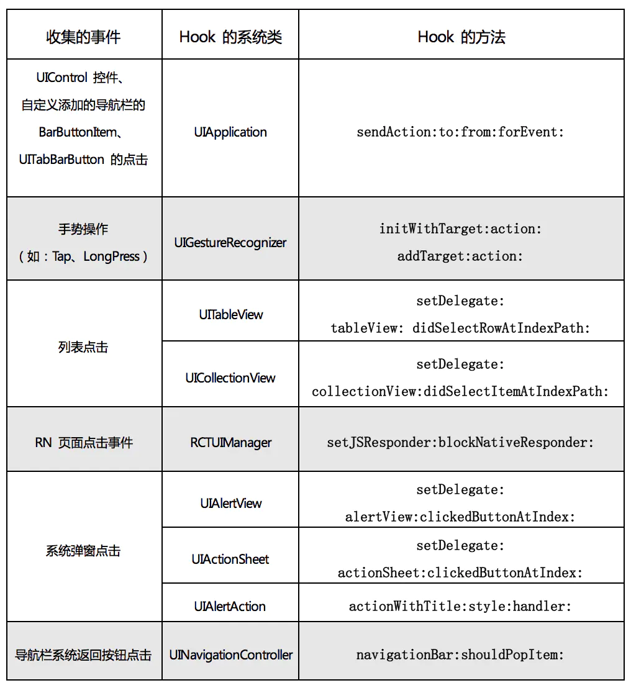
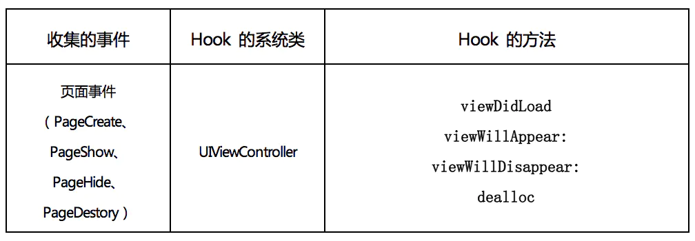
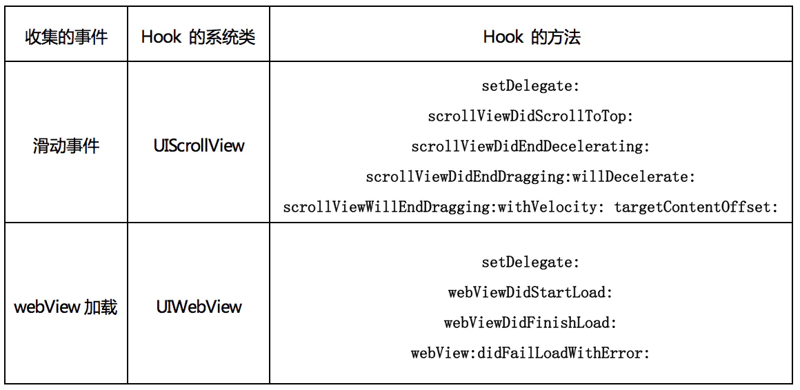
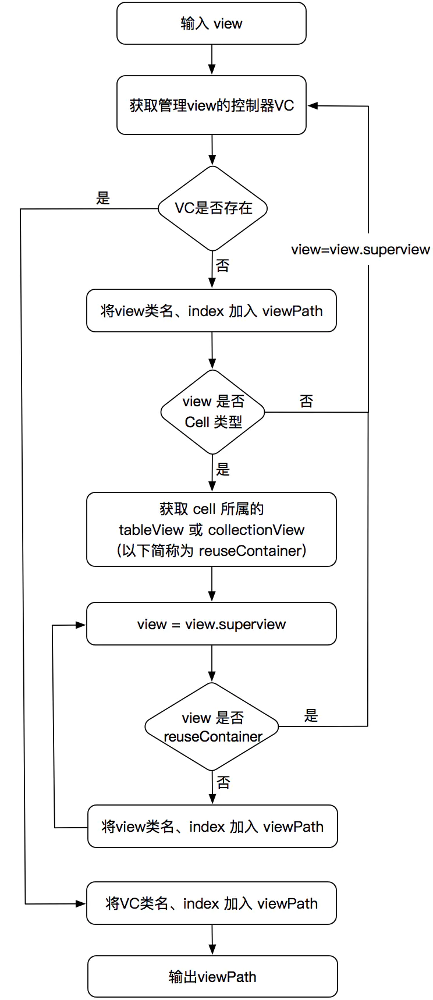

本文为转载。
作者：zerygao
链接：https://www.jianshu.com/p/5f16e1de6d5a
来源：简书
iOS无埋点数据 SDK 实践之路
iOS无埋点SDK 之 RN页面的数据收集
本篇文章是讲述 iOS 无埋点数据收集 SDK 系列的第三篇，之前的两篇文章都只是讲述了某一方面的内容，而本篇会详细介绍下 SDK 的整体设计以及各个模块的功能和实现思路。
SDK 的整体设计
先看一张 SDK 的整体设计图：

从上图看出，SDK 整体上主要包含 4 个部分：AOP、Event Collector、Event Cache、Event Upload。其中，每个部分是一个相对独立的功能模块，同时模块之间通过图中的方式进行通信。
SDK 中的这 4 个模块各自的主要功能如下：
- AOP：提供数据收集所需要的时机，即通过
Method Swizzling来hook相应类的方法，然后以Post Notification的方式提供出去。 - Event Collector：监听通知，针对当前事件执行相应的数据收集，并将收集的事件数据提交给缓存模块。
- Event Cache：负责事件数据的缓存、序列化以及读取操作，其中包括内存缓存与磁盘缓存。
- Event Upload：基于一定的上报策略执行对已收集的事件数据的上报。
接下来逐个介绍上述 4 个模块的具体实现细节。
AOP
这个模块的主要功能就是提供 SDK 执行数据收集所需的时机，在实现上又可以细分为 2 个方面：
- 实现
AOP编程 hook类的方法
实现 AOP 编程
在 iOS 中实现 AOP 编程的技术就是基于 Objective-C Runtime 特性的 Method Swizzling。而在 Github 上已经有一个很不错的实现了 AOP 的开源库-Aspects，它的实现也是利用了 Objective-C 的消息转发机制与 Method Swizzling 黑魔法。
但是，SDK 最终并未使用 Aspects 库，虽然 Aspects 封装的很好而且很好用，但是它并不能完全满足项目的需要，主要表现在如下 2 个方面：
- Aspects 无法
hook类中不存在的方法，或者未实现的方法。 - Aspects 不支持
hook类的类方法。
因此，SDK 单独实现并封装了一个用于执行 hook 的类，其实现也是对 NSObject 的扩展，类似于 Aspects。
hook 的方法
在 上篇文章 中简单提了一下，SDK 在实现对基本事件数据的自动收集时，主要 hook 的方法分为 3 类：
- 系统类的方法
- 系统类的
Delegate方法 - 自定义类的方法
那么，接下来就详细的介绍一下，SDK 在实现对事件的收集时，具体 hook 了哪些类的哪些方法。
各类点击事件的拦截
对于 SDK 来说，收集用户的所有点击的行为数据是非常重要的一部分。另外，这部分数据对于用户行为分析以及统计路径转化率时，都是至关重要的。
那么 SDK 对于用户的各类点击事件的收集，主要 hook 了如下的一些系统类的方法：

针对上图，做一些简要的说明：
- 所有的
UIControl类型的控件、UITabBarButton以及在导航栏上自定义添加的UIBarButtonItem的点击事件，都可以通过hook系统类UIApplication的sendAction:to:from:forEvent:方法进行拦截。但是，这个方法并不能拦截到导航栏上系统自动添加的返回按钮的点击，因此 SDK 又hook了UINavigationController的navigationBar:shouldPopItem:方法来实现对它的点击的拦截。 - 针对与手势相关的事件，SDK 首先通过
hook系统类UIGestureRecognizer的initWithTarget:action:与addTarget:action:这 2 个方法拿到 target 对象与 action 方法，然后再去hooktarget 的 action 方法，从而能够拦截到手势相关的事件。 - 对于 UITableView、UICollectionView 某一行的点击，首先
hook它们的setDelegate:方法，从而拿到 delegate 对象，然后再去hookdelegate 的didSelectRowAtIndexPath:方法即可。 - 对于 RN 页面中的点击，是通过
hookRN 框架中的RCTUIManager类的setJSResponder:blockNativeResponder:方法，具体原因可以看 这篇文章 的详细讲解。另外，为了避免 SDK 对 RN 框架产生依赖，通过NSClassFromString(@"RCTUIManager")来判断当前主工程是否使用了 RN 框架，如果未获取到此类，则不执行hook操作。 - 对于系统弹窗的点击这块，需要拦截到
UIAlertView、UIActionSheet以及 iOS8 上新增的UIAlertController这 3 个弹窗的点击。对于前2个，只需要hook它们的 delegate 方法。而对于UIAlertController是没有提供相应的 delegate 方法的，这里可以通过hookUIAlertAction类的actionWithTitle:style:handler:类方法来拦截到其点击事件。
页面事件的拦截
对于页面事件的收集，主要通过 hook 系统类 UIViewController 的生命周期方法来实现，具体看下图：

滑动事件 & UIWebView加载事件
对于 iOS 中的滑动事件、UIWebView 的加载事件的收集，SDK 主要 hook 了 setDelegate: 方法以及 UIScrollViewDelegate、UIWebViewDelegate 中的方法。其原理上与 UITableView 的类似。具体见下图：

Event Collector
SDK 通过 AOP 层已经可以拿到执行各个事件的数据收集的时机，接下来就是执行真正的数据收集了，其中包括了对 点击事件的收集、页面事件的收集、滑动事件的收集等。
这些要收集的事件数据中包含一些基本信息，如：eventName、appKey、eventTime、sessionId、deviceId 等。除此之外，还有一些与特定事件相关的信息，例如对于 view 的点击事件，还需要收集与 view 的相关信息；对于列表行的点击，还需要收集点击行的 indexPath 信息；而对于 webView 加载事件则需要收集其 url 与 error 等信息。
接下来主要说一下 SDK 中点击事件的收集。
首先，对于 UIControl 控件与添加了 UITapGestureRecognizer 的 view，在收集它们的点击事件的数据时，重点收集了 2 部分内容：pageName、viewInfo。其中，pageName 是表明点击事件发生在哪个页面，一般用 viewController 的类名表示；viewInfo 是指当前被点击的view的一些相关信息，有：viewClass、viewPath、frame、title（如果有）、viewId 等。而 viewPath 是最关键的一项信息，能够唯一标识当前 view。
其次，对于导航栏上的点击事件的收集，与上面要收集的信息几乎是一样的，只是在收集 pageName 的数据时不一样。导航栏的点击事件默认的 pageName 是 UINavigationController，但是为了能够更好的分析用户行为，这里将 App 当前正在显示的页面作为其 pageName。
同理，收集系统弹窗的点击事件时，也将 App 当前正在显示的页面作为其 pageName。除此之外，由于同一个页面中可能会出现多个弹窗，它们的按钮文字信息有可能一样，比如经常会用 “确定”、“取消” 等文字，这时单纯靠按钮的 title 无法区分这些不同的弹窗，为了解决这个问题，又加入了系统弹窗的标题(title、message)。
最后，讲一下 SDK 中获取 viewPath 的实现逻辑，具体如下图所示：

Event Cache
这个模块主要负责所有事件数据的存取及序列化操作，具体可分为如下 3 部分：
- 采用双缓存的结构将数据存储在内存中。具体实现是，将新添加的事件数据先存储到全局数组 eventArray 中，等满足数据上报条件时，从 eventArray 中读出一部分数据并随机生成一个唯一的 eventsID，将其以 key-value 的形式存放到全局字典 popedEventDict 中，等这部分数据上传成功后再将 eventsID 对应项从 popedEventDict 中移除。
- 在某些情况下（App 即将被杀死、程序抛出异常），将内存中的数据以文件的形式持久化存储至磁盘中，以防数据丢失。
- 将从内存或文件中读取的数据执行 protobuf 序列化操作，以便后续的数据上传操作。
另外，为了确保对数据存取的多线程安全，上述操作全部都放到了同一个串行队列中执行。
Event Upload
这个模块的主要功能就是根据一定的数据上报策略，上报已收集的所有事件数据。数据上报主要包括对内存数据和本地文件这2部分，下面分别介绍一下它们的上报策略与实现思路。
内存数据的实时上报
首先，针对内存数据的上报策略有 2 个：
- 每隔 30 秒
- 每累积 10 条数据。
当满足上述条件之一时，会触发从内存中读取数据，并执行上传操作。对于内存数据的上传，单独创建了一个并发队列，并限制其最大并发数为 10，以防由于数据频繁时上报引起开启的线程数太多。
本地文件数据的上传
为了尽早的上传本地文件，以防用户卸载 App 造成本地数据的丢失，针对本地文件的上传策略有如下 3 个：
- App 冷启动
- App 进入前台
- App 进入后台
这里创建了一个单独的串行队列，来实现对本地文件进行逐个上传，即等上一个文件上传成功后，再触发下一个文件的上传。因此，上述 3 个触发时机并不会造成文件的重复上传，并以较小的代价完成本地文件的上传。
数据存取与上传的实现流程
其实上面已经讲了大致的实现思路，里面设计到了使用 GCD 队列来控制数据上传与保证多线程安全。为了更清晰的展示出这 2 部分的实现逻辑，简单画了一个流程图展示出来：

END
本篇文章主要介绍了无埋点数据 SDK 的整体设计，以及各个模块的功能和实现思路，其中重点介绍了执行事件收集所需 hook 的具体方法，和事件数据的存取与上报功能的实现流程。如果对本文有问题，请留言评论。